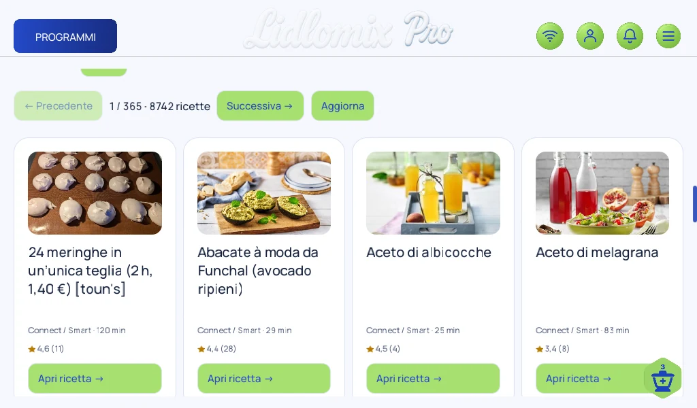

01 / Inizio ·
Ricette dal quaderno di famiglia
Quando mia nonna diceva «prendine una manciata», sapeva esattamente quanto ne serviva. E veniva sempre delizioso. Ricette così si tramandavano di generazione in generazione e le pagine conservavano le tracce di anni passati in cucina. Avevo proprio un quaderno del genere, con pagine macchiate e appunti scritti a mano. Sfogliandolo, ho pensato che sarebbe stato bello fotografare una pagina e cucinare quella ricetta sul mio Lidlomix.
Una foto della pagina
All’epoca i modelli leggevano la scrittura a mano polacca con risultati altalenanti. Un ricciolo che per me era chiarissimo poteva sembrare a ChatGPT una cifra completamente diversa. Gli mostravo esempi, correggevo gli errori e verificavo se riuscisse a trascrivere tutta la pagina e a segnalare i punti di cui non era sicuro.
Da queste prove è nato lo spunto «Le ricette della nonna» in Lidlomix GPT. Bastava aprirlo, caricare una foto e scrivere «Adatta la ricetta». L’assistente leggeva il testo nella foto e mostrava ciò che aveva trovato sulla pagina. A quel punto si poteva correggere un ingrediente, una misura o una sequenza letta nell’ordine sbagliato. Solo dopo la conferma preparava la versione per Monsieur Cuisine.
Quanto pesa una manciata?
«Un vasetto di panna», «una manciata di noci», «tanta farina quanta ne assorbe l’impasto». Erano indicazioni per chi conosceva già quel modo di cucinare. Per passare al robot mi servivano quantità da pesare e istruzioni da seguire. L’assistente convertiva le misure in base agli ingredienti, metteva in ordine i passaggi e sceglieva programmi, accessori, tempi, temperature e velocità.
Potevo salvare la ricetta adattata in Word e portarla in cucina. Nel programma manuale, però, dovevo impostare ogni volta a mano tempo, velocità e temperatura. La pagina era leggibile e la ricetta adattata. Mi mancava ancora la possibilità di aprirla sul robot e seguire i passaggi con le impostazioni già pronte.
Ricetta sullo schermo robot
Nell’app di fabbrica non ho trovato un modo per ricevere una ricetta pronta dall’assistente. Volevo anche collegare uno strumento locale tramite MCP, il protocollo che consente all’assistente di proporre una ricetta all’app per l’approvazione. Ho quindi iniziato a scrivere Lidlomix Pro da zero in Rust. Le schermate di fabbrica mi hanno aiutato a disporre i comandi in un modo familiare. Ho scritto personalmente il catalogo, la ricerca e la gestione dei passaggi.
Sul Connect contava anche la memoria. L’app conserva le ricette in un database SQLite locale e carica solo i risultati necessari per la schermata, senza mettere in RAM l’intero catalogo. La ricetta preparata in chat si può salvare in JSON e inviare dal telefono tramite Wi-Fi. Sul robot si apre nella sezione Bozze di ricette, dove si può verificare e approvare. Dopo il salvataggio rimane sul dispositivo. Nello stesso file si può includere una foto del piatto fino a 500 kB.
Oggi posso tornare al quaderno, fotografare una pagina e passare da una «manciata di noci» scritta a mano a una ricetta sullo schermo del Connect. A ogni passaggio vedo cosa aggiungere e quale programma avviare. Le impostazioni sono già pronte e premo Avvia quando tutto è nel recipiente.
Vi presentiamo l'assistente di Lidlomix a ChatGPT
